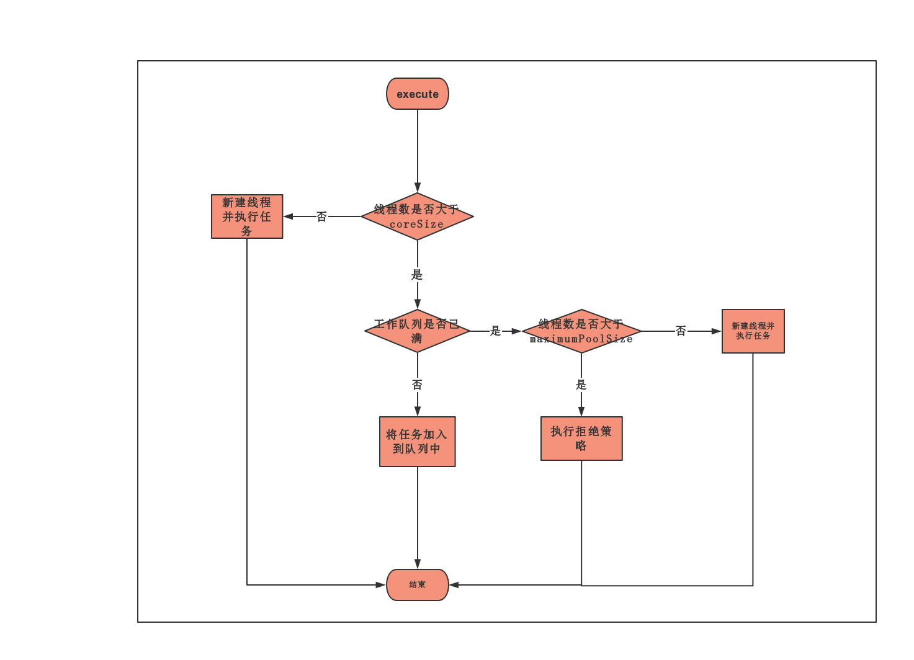

原文连接:https://www.cnblogs.com/goodAndyxublog/p/11664742.html
上篇文章 ShutdownHook- Java 优雅停机解决方案 提到应用停机时需要释放资源，关闭连接。对于一些定时任务或者网络请求服务将会使用线程池，当应用停机时需要正确安全的关闭线程池，如果处理不当，可能造成数据丢失，业务请求结果不正确等问题。
关闭线程池我们可以选择什么都不做，JVM 关闭时自然的会清除线程池对象。当然这么做，存在很大的弊端，线程池中正在执行执行的线程以及队列中还未执行任务将会变得极不可控。所以我们需要想办法控制到这些未执行的任务以及正在执行的线程。
线程池 API 提供两个主动关闭的方法 ThreadPoolExecutor#shutdownNow 与 ThreadPoolExecutor#shutdown，这两个方法都可以用于关闭线程池，但是具体效果却不太一样。
线程池的状态
在说线程池关闭方法之前，我们先了解线程池状态。
线程池状态关系图如下：

从上图我们看到线程池总共存在 5 种状态，分别为：
- RUNNING：线程池创建之后的初始状态，这种状态下可以执行任务。
- SHUTDOWN:该状态下线程池不再接受新任务，但是会将工作队列中的任务执行结束。
- STOP: 该状态下线程池不再接受新任务，但是不会处理工作队列中的任务，并且将会中断线程。
- TIDYING：该状态下所有任务都已终止，将会执行
terminated()钩子方法。 - TERMINATED：执行完
terminated()钩子方法之后。
当我们执行 ThreadPoolExecutor#shutdown 方法将会使线程池状态从 RUNNING 转变为 SHUTDOWN。而调用 ThreadPoolExecutor#shutdownNow 之后线程池状态将会从 RUNNING 转变为 STOP。从上面的图上还可以看到，当线程池处于 SHUTDOWN，我们还是可以继续调用 ThreadPoolExecutor#shutdownNow 方法，将其状态转变为 STOP 。
ThreadPoolExecutor#shutdown
上面我们知道线程池状态，这里先说说 shutdown 方法。shutdown 方法源码比较简单，能比较直观理解其调用逻辑。
shutdown 方法源码：
public void shutdown() {
final ReentrantLock mainLock = this.mainLock;
mainLock.lock();
try {
// 检查权限
checkShutdownAccess();
// 设置线程池状态
advanceRunState(SHUTDOWN);
// 中断空闲线程
interruptIdleWorkers();
// 钩子函数，主要用于清理一些资源
onShutdown();
} finally {
mainLock.unlock();
}
tryTerminate();
}shutdown 方法首先加锁，其次先检查系统安装状态。接着就会将线程池状态变为 SHUTDOWN，在这之后线程池不再接受提交的新任务。此时如果还继续往线程池提交任务，将会使用线程池拒绝策略响应，默认情况下将会使用 ThreadPoolExecutor.AbortPolicy，抛出 RejectedExecutionException 异常。
interruptIdleWorkers 方法只会中断空闲的线程，不会中断正在执行任务的的线程。空闲的线程将会阻塞在线程池的阻塞队列上。
线程池构造参数需要指定 coreSize（核心线程池数量），maximumPoolSize（最大的线程池数量），keepAliveTime（多余空闲线程等待时间），unit（时间单位），workQueue（阻塞队列）。
当调用线程池的 execute 方法，线程池工作流程如下：
- 如果此时线程池中线程数量小于 coreSize，将会新建线程执行提交的任务。
- 如果此时线程池线程数量已经大于 coreSize，将会直接把任务加入到队列中。线程将会从工作队列中获取任务执行。
- 如果工作队列已满，将会继续新建线程。
- 如果工作队列已满，且线程数等于 maximumPoolSize，此时将会使用拒绝策略拒绝任务。
- 超过 coreSize 数量那部分线程，如果空闲了 keepAliveTime ，线程将会终止。
工作流程图如下：

当线程池处于第二步时，线程将会使用 workQueue#take 获取队头的任务，然后完成任务。如果工作队列一直没任务，由于队列为阻塞队列，workQueue#take 将会阻塞线程。
ThreadPoolExecutor#shutdownNow
ThreadPoolExecutor#shutdownNow 源码如下：
public List<Runnable> shutdownNow() {
List<Runnable> tasks;
final ReentrantLock mainLock = this.mainLock;
mainLock.lock();
try {
// 检查状态
checkShutdownAccess();
// 将线程池状态变为 STOP
advanceRunState(STOP);
// 中断所有线程，包括工作线程以及空闲线程
interruptWorkers();
// 丢弃工作队列中存量任务
tasks = drainQueue();
} finally {
mainLock.unlock();
}
tryTerminate();
return tasks;
}shutdownNow 方法将会把线程池状态设置为 STOP，然后中断所有线程，最后取出工作队列中所有未完成的任务返回给调用者。
对比 shutdown 方法，shutdownNow 方法比较粗暴，直接中断工作线程。不过这里需要注意，中断线程并不代表线程立刻结束。这里需要线程主动配合线程中断响应。
线程中断机制：
thread#interrupt只是设置一个中断标志，不会立即中断正常的线程。如果想让中断立即生效，必须在线程 内调用Thread.interrupted()判断线程的中断状态。
对于阻塞的线程，调用中断时，线程将会立刻退出阻塞状态并抛出InterruptedException异常。所以对于阻塞线程需要正确处理InterruptedException异常。
awaitTermination
线程池 shutdown 与 shutdownNow 方法都不会主动等待执行任务的结束，如果需要等到线程池任务执行结束，需要调用 awaitTermination 主动等待任务调用结束。
调用方法如下：
threadPool.shutdown();
try {
while (!threadPool.awaitTermination(60,TimeUnit.SECONDS)){
System.out.println("线程池任务还未执行结束");
}
} catch (InterruptedException e) {
e.printStackTrace();
}如果线程池任务执行结束，awaitTermination 方法将会返回 true，否则当等待时间超过指定时间后将会返回 false。
如果需要使用这种进制，建议在上面的基础上增加一定重试次数。这个真的很重要！！！
优雅关闭线程池
回顾上面线程池状态关系图，我们可以知道处于 SHUTDOWN 的状态下的线程池依旧可以调用 shutdownNow。所以我们可以结合 shutdown ， shutdownNow，awaitTermination ，更加优雅关闭线程池。
threadPool.shutdown(); // Disable new tasks from being submitted
// 设定最大重试次数
try {
// 等待 60 s
if (!threadPool.awaitTermination(60, TimeUnit.SECONDS)) {
// 调用 shutdownNow 取消正在执行的任务
threadPool.shutdownNow();
// 再次等待 60 s，如果还未结束，可以再次尝试，或则直接放弃
if (!threadPool.awaitTermination(60, TimeUnit.SECONDS))
System.err.println("线程池任务未正常执行结束");
}
} catch (InterruptedException ie) {
// 重新调用 shutdownNow
threadPool.shutdownNow();
}文章首发于 studyidea.cn/close..
欢迎关注我的公众号：程序通事，获得日常干货推送。如果您对我的专题内容感兴趣，也可以关注我的博客：studyidea.cn